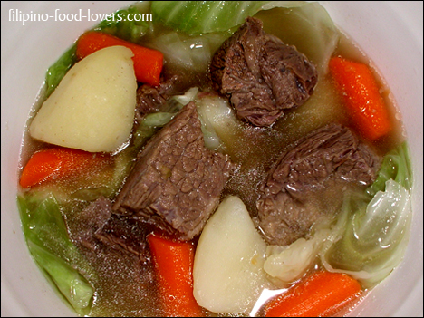
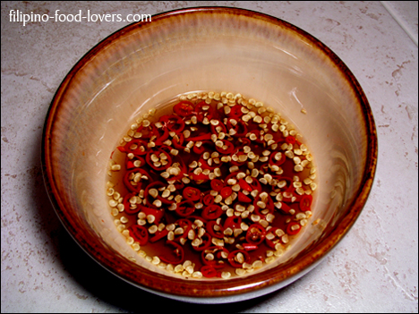
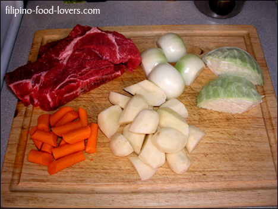
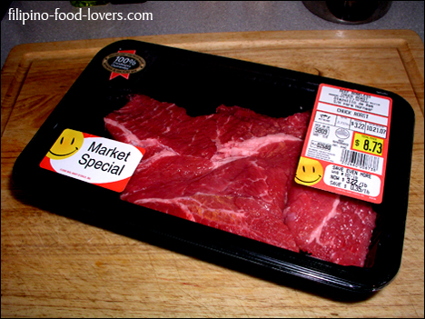

Nilagang Baka
White steamed rice, fish sauce with calamansi, and thai chili peppers for condiments makes this dish a true wonder when it comes to lunch time.
A lot of us prefer this dish with just soup bones, but every once in a while we look for something meatier and that’s where this particular version of Nilagang Baka comes in.
I have seen so many versions when it comes to Nilagang Baka.
Some of them are very elaborate and sometimes it makes me wonder if using all those ingredients actually over powers the entire dish.
It seems as if you would not be able to enjoy the flavor of the meat.
Having said that it inspired me to come up with my personal version of Nilagang Baka.
It is very simple and does highlight the true flavor of the beef by simplifying the ingredients.
So let’s try another mouth-watering dish by letting the flavor of the beef do the work.
Ingredients:
- 3½ Lbs. Boneless beef chuck roast cut in 2 in. cubes
- 2 Medium onions sliced thinly
- 1 Small Cabbage de-cored and cut in wedges
- 3 Medium carrots peeled and cut in 2 in. pieces
- 4 Medium potatoes peeled and quartered
- Water for braising (boiling) don’t use beef broth*8 Whole peppercorns
- 1 Tbs. Salt
- ½ Tbs. MSG (vetsin)
Note: * It will alter the taste..
Cooking Process:
- In a large pot place beef and cover with water about 2 inches above the meat.
- Bring it to a rapid boil.Remove the scum as it rises, add the onions, and lower the heat to medium high.
- Cover and let simmer for 15 minutes.Next add salt, msg, and whole peppercorns.
- Cover and let it cook for 1½ hours or until beef is very tender.
- Add more water if necessary maintaining the 2 inch water level above the meat.
- At this time you may add the carrots and potatoes.
- Cover and let them cook for an additional 10 minutes or until carrots and potatoes are tender.
- Add cabbage, cover, and let it cook for 3 more minutes.
- Adjust the taste by adding more salt if necessary.
- Serve with white rice and the fish sauce condiments. Enjoy!
Translation:
Nilaga = Braised or Boiled
Thai Peppers = Siling Labuyo or Birds Eye Chili
Baka = Beef



